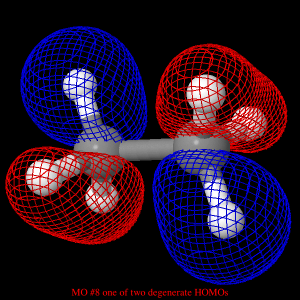

Once the molecule file is fully loaded the image at right will become live. At that time the "activate 3-D" icon
 will disappear.
will disappear.
Insert the page TITLE here.
Insert the page INTRODUCTION here.The button MO 8 will appear below. Insert information for MO 8 here and below.
The button MO 9 will appear below. Insert information for MO 9 here and below.
The button Comparison will appear below. Insert information for Comparison here and below.
You may look at any of these intermediate views again by clicking on the appropriate button.
Page skeleton and JavaScript generated by export to web function using Jmol 14.1.5 2014-01-09 20:04: on Jan 22, 2014.
This will be the viewer

If your browser/OS combination is Java capable you will get snappier performance if you
use Java.